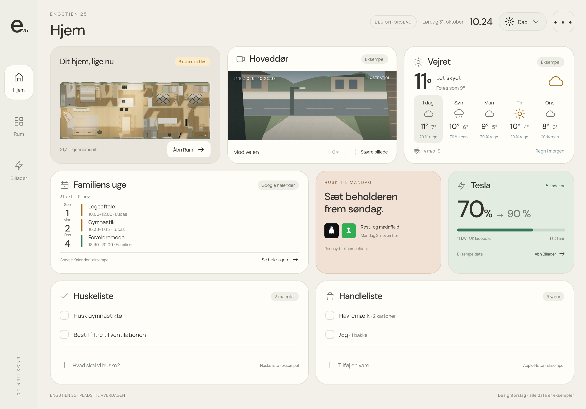
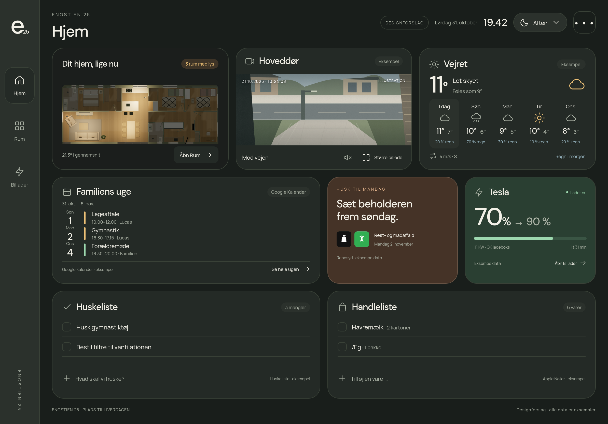
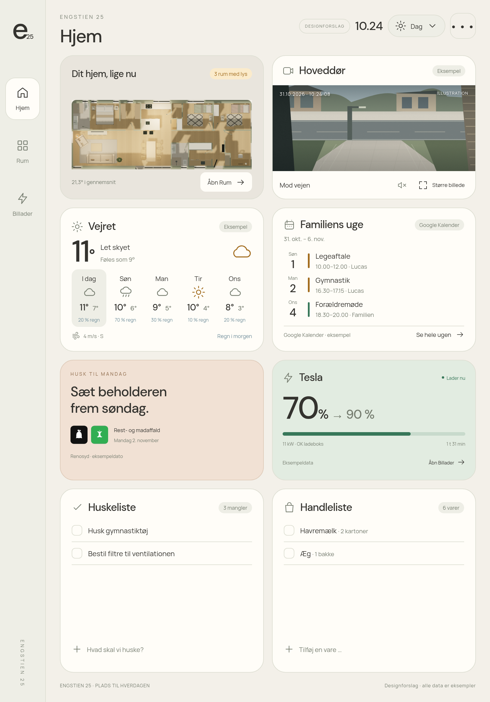
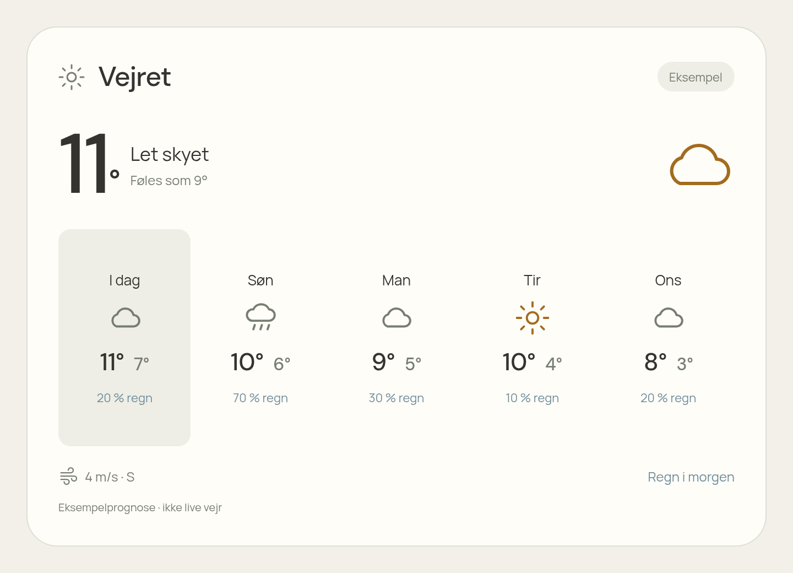
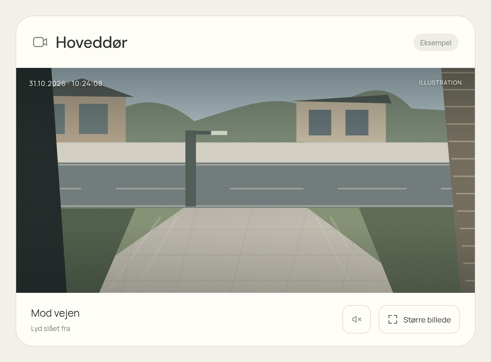
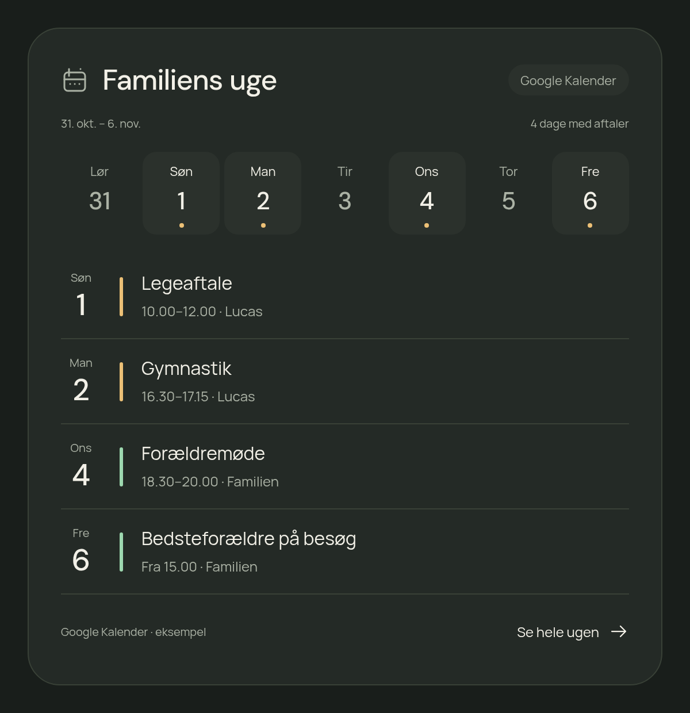
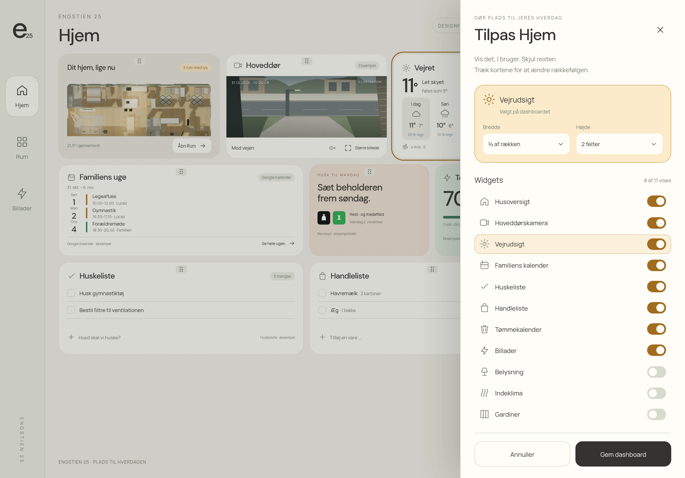

Hjem · vandret iPad · dag

Hent PNG · Åbn design som HTML
Syv designrenderinger til godkendelse. Appen er ikke ændret. Samme varme, neutrale stil som det nuværende dashboard med tydelige farver til status og handlinger. Alle viste aftaler, prognoser og målinger er eksempler. Kameraets udsigt er en illustration, ikke jeres kamera.







Kalender: Google Kalender, kommende syv dage med fokus på dage med aktiviteter. Kamera: lyd fra som standard og mulighed for større billede. Redigering: alle nye og eksisterende widgets kan vises/skjules, flyttes og tilpasses i et fast grid. De funktioner, der vises, er endnu ikke implementeret i appen.